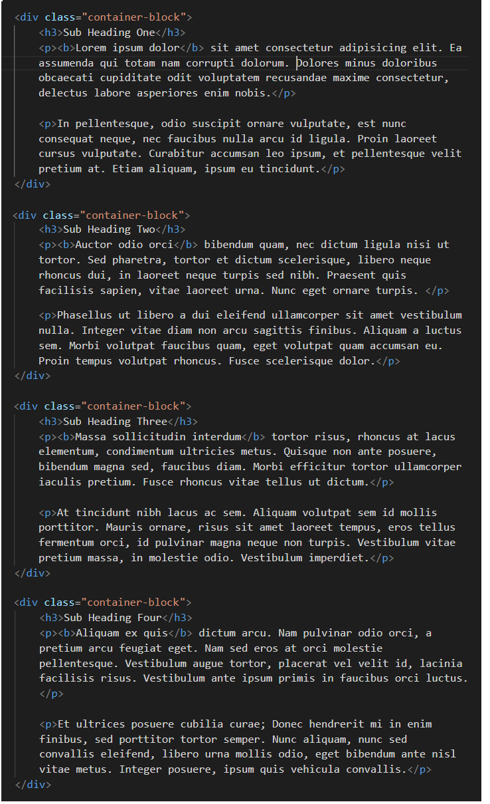
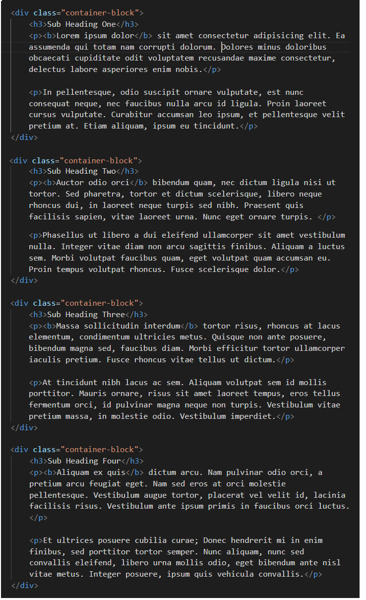
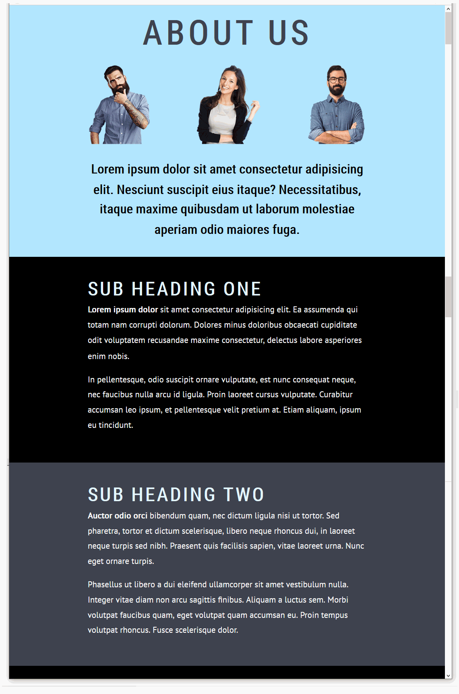

Learning Goals
At the end of this Tutorial you will be able to:
- Create and style <div> ... </div> tags for use as vertically alternating sections in a web page.
- Apply two separate CSS classes to a section <div> ... </div>: one for basic layout and the other for visual effect.
You can view finished versions of the three sample web pages you will create in this Tutorial by clicking the links below. The finished samples will each open in a new tab of your web browser.
You will also update your website home web page with hyperlinks to your three new sample web pages.
About ‘sections’ in web pages
In web design, the word section is used to describe a typically vertical sub-division of content in a web page. Usually, all sections are equally important. They are sub-divided for one reason only: to make them more inviting and easier to read.
In this Tutorial, you will create and style three examples of web pages with vertical sections. In each case, the sections will have two alternating background colours.

Working with your sample web page
In this Tutorial you will work with these files:
- The page-10.html web page, which contains the three-staff.png image.
- The style-10.css stylesheet.
You downloaded and unzipped these three files in the previous Introduction to the Box Model Tutorial.
Display the page-10.html web page in your Chrome or Mozilla Firefox Developer Edition browser. It should look as shown below.

Editing with your HTML file
You are now ready to work with your first sample web page that will contain sections.
- Start VS Code, and then open the following two files:
page-10.html
style-10.css
- In the HTML file, you can see that the first few lines of content are enclosed or ‘wrapped’ inside a <div> ... </div> tag pair with a class name of container-block.
 Note that the three child elements (a main <h1> heading, an image and an <h2> sub-heading) within this parent <div> are indented from the left edge of the VS Code screen.
Note that the three child elements (a main <h1> heading, an image and an <h2> sub-heading) within this parent <div> are indented from the left edge of the VS Code screen.
- Under the first container-block you can see a second <div> with the same class name. It contains an <h3> sub-heading and two paragraphs of text. Again, note that its child elements are indented from the left edge of the screen.
 Copy-and-paste three copies of this second container-block <div> within the page. Update the text within the <h3> sub-heading from “Sub Heading One“ to “Sub Heading Two“, “Sub Heading Three“ and “Sub Heading Four“.
Your web page should now look as shown below.

In every case, ensure the child elements are indented from the left edge of the screen.
When finished, save your page-10.html file
Copy-and-paste three copies of this second container-block <div> within the page. Update the text within the <h3> sub-heading from “Sub Heading One“ to “Sub Heading Two“, “Sub Heading Three“ and “Sub Heading Four“.
Your web page should now look as shown below.

In every case, ensure the child elements are indented from the left edge of the screen.
When finished, save your page-10.html file
- In VS Code, view the style-10.css stylesheet. You can see that the .container-block declaration contains only three style rules in CSS shorthand, single-line format: a solid, red border that has a width of one pixel.

- View your page-10.html web page in your browser. It should look as shown below.

The red border technique for visualising divs
The placing of a thin, red-coloured border around <div> elements is a common technique or ‘hack’ used by designers to help them view the layout of <div> boxes in the web browser.
Editing with your CSS stylesheet
Follow these steps to add some standard layout spacing to your content block divs.
- In VS Code, add new padding values to the .container-block declaration near the top of the stylesheet. You can simply copy-and-paste the following.
.container-block {
border: solid 1px red;
padding: 50px 18% 50px 18%;
}
- Save the style-10.css stylesheet and view your page-10.html page in your web browser. It should look as shown below.

Styling your container blocks
In the next few steps, you will add some new classes to create different background styles for your web page.
- At the bottom of your style-10.css stylesheet, copy-and-paste these following three new selectors and style rules. Each selector does only one job: it adds a background colour.
.bg-hero-block { background-color: #f5f9fb }
.bg-pastel-1 { background-color: #BEC7B4 }
.bg-pastel-2 { background-color: #DEE2D9 }
}
- You can now delete the ‘red box’ style rule from your .container-block declaration block.
A better option is to wrap it inside comment tags, just in case you want to reuse this visual guide again later.

- When finished, save your style-10.css stylesheet file.
- Switch to your page-10.html web page, and add the following classes to the container-block <div> tags.
 Each of your content container blocks now has two classes that control its appearance:
Each of your content container blocks now has two classes that control its appearance:
- A container-block class that controls the spacing around it, and
- And a second class such as bg-pastel-2 that controls only the colour of its background – and nothing else.

- Save your page-10.html web page and view it in your web browser. It should now look as shown below.

Controlling the vertical spacing between container blocks
One problem remains with your web page: there is more vertical spacing below the content of your container blocks than above them.

This does not look right
A more professional and visually pleasing web page would have equal vertical spacing at the top and the bottom of the content within the container blocks. See below.

The extra vertical spacing at the bottom of your container-block <div> elements is the result of the margin-bottom value of the <p> paragraph tag.
margin-bottom: 20px;
You could delete this CSS style rule from the p paragraph styles. Then your paragraphs would have a margin-bottom value of zero, as set out in the web browser resets at the top of your stylesheet file.
Unfortunately, there would be no vertical spacing between <p> paragraphs of text within your container blocks. See below.

A more correct solution is as follows:
- In your style-10.css stylesheet, after the end of the .container-block p declaration block, copy-and-paste the following new style.
.container-block p:last-child { margin-bottom: 0 }
This new style applies only to the final paragraph within a container-block.
No other paragraphs of text will be affected.
- But what if the last item of content inside a container-block is not a paragraph, but something else? Such as an image, button, video or whatever?
The ideal solution is to use the 'wildcard' asterisk * character as follows.
.container-block *:last-child { margin-bottom: 0 }
- Save your stylesheet and view your page-10.html web page in your browser. The container blocks and the content inside them should now look as shown below.

Click page-10.html to view a finished sample of this web page in a new tab of your web browser.
Working with your second sample web page
To begin this second sample exercise, open these two files in VS Code:
- The web page named page-10.html
- The stylesheet named style-10.css
Next, follow the steps below:
- Use the File | Save As command to save the two files with these new file names:
page-11.html
style-11.css
- In the <head> of your new page-11.html file, copy-and-paste the following to replace the title and description tags:
<title>Sample of content container blocks with altenating dark styles</title>
<meta name="description" content="Using full-width divs to create a web page of alterating block containers with dark backgrounds.">
- Also in the <head>, change the stylesheet link as follows:
<link rel="stylesheet" href="style-11.css">
- And finally in <head>, replace the Google Fonts with the following:
<link href="https://fonts.googleapis.com/css2?family=Roboto+Condensed&display=swap" rel="stylesheet">
<link href="https://fonts.googleapis.com/css2?family=PT+Sans&display=swap" rel="stylesheet">
- When finished, save your page-11.html file.
Next, let’s perform some style updates in the stylesheet file, style-11.css.
- To change the fonts, replace the values of the font-family property of your main heading, sub-headings and text paragraphs as follows:

font-family: 'Roboto Condensed', sans-serif;


font-family: 'Roboto Condensed', sans-serif;

font-family: 'Roboto Condensed', sans-serif;

font-family: 'PT Sans', sans-serif;
- To change the font colours, replace the values of the color property of your main heading, sub-headings and text paragraphs as follows.
color: #3e414f;
color: #000000;
color: #e1f5fe;
color: #fff;
- To change the spacing between letters within your headings and sub-headings:
- For your <h1> heading, update the letter-spacing value as follows.
letter-spacing: 8px;
- For your <h3> heading sub-heading, update the letter-spacing value as follows.
letter-spacing: 4px;
- To change the capitalisation of your headings and sub-headings, add the following new text-transform properties and values.
- Next, change the names and the background-color values of the two CSS declarations that control the visual appearance of the alternating blocks of content.
.bg-dark-1 { background-color: #000000 }
.bg-dark-2 { background-color: #3e414f }
You do not need to change the class name or the background-color value of the .bg-hero declaration.
- When finished, save your style-11.css stylesheet.
- Switch to your page-11.html web page, and update the classes to match the class names in your stylesheet.
- Rename the bg-pastel-1 class to bg-dark-1, and
- Rename the bg-pastel-2 class to bg-dark-2
- When finished, save your web page. It should now look as shown below.

Click page-11.html to view a finished sample of this web page in a new tab of your web browser.
Working with your third sample web page
To begin the third sample exercise, open these two files in VS Code:
- The web page named page-11.html
- The stylesheet named style-11.css
Next, follow the steps below:
- Use the File | Save As command to save the two files with these new file names:
page-12.html
style-12.css
- In the <head> of your new page-12.html file, copy-and-paste the following to replace the title and description tags:
<title>Sample of container blocks with altenating light and dark styles</title>
<meta name="description" content="Using full-width divs to create a web page with alterating light and dark background coloured container styles.">
- Also in the <head>, change the stylesheet link as follows:
<link rel="stylesheet" href="style-12.css">
- And finally in <head>, replace the Google Fonts with the following:
<link href="https://fonts.googleapis.com/css2?family=Fira+Sans&display=swap" rel="stylesheet">
<link href="https://fonts.googleapis.com/css2?family=Arvo&display=swap" rel="stylesheet">
- When finished, save your page-12.html file.
Next, let’s perform some style updates in the stylesheet file, style-12.css.
- To change the fonts, replace the values of the font-family property of your main heading, sub-headings and text paragraphs as follows:
font-family: 'Fira Sans', sans-serif;
font-family: 'Fira Sans', sans-serif;
font-family: 'Fira Sans', sans-serif;
font-family: 'Arvo', sans-serif;
- To change the font colours, replace the values of the color property of your main heading, sub-headings and text paragraphs as follows.
color: #1435b3;
color: #696969;
color: #000;
color: #2F4F4F;
- To change the spacing between letters wuthin your headings and sub-headings:
- For your <h1> heading, update the letter-spacing value as follows.
letter-spacing: -3px;
- For your <h3> sub-heading, update the letter-spacing value as follows.
letter-spacing: -3px;
- To change the capitalisation of your headings, remove any text-transform properties and values from the style-12.css stylesheet.
- Next, change the names and the background-color values of the two CSS declarations that control the visual appearance of the alternating blocks of content.
.bg-blue-light { background-color: #d8f0f5 }
.bg-blue-dark { background-color: #1435b3 }
You do not need to change the class name or the background-color value of the .bg-hero declaration.
- When finished, save your style-12.css stylesheet.
- Switch to your page-12.html web page, and update the classes to match the class names in your stylesheet.
- Rename the bg-dark-1 class to bg-blue-dark, and
- Rename the bg-dark-2 class to bg-blue-light
- When finished, save your web page. It should now look as shown below.

Alternating font colours between container blocks
We still have some more work to do with this third sample web page and stylesheet.
- For the container-block divs with a dark blue background, we would like both the sub-headings and text paragraphs to display in a light blue colour.
- For the container-block divs with a light blue background, we would like the sub-headings to display in a dark blue, and the text paragraphs in a dark colour closer to black.

Follow these steps:
- In the style-12.css stylesheet, add the following new lines at the bottom of the file.
.container-block.bg-blue-light h3 { color: #1435b3 }
.container-block.bg-blue-light p { color: #000 }
.container-block.bg-blue-dark h3 { color: #fff }
.container-block.bg-blue-dark p { color: #fff }
By ‘joining’ the two class selectors of .container-block and .bg-blue-dark together without any empty space between them, you are telling the web browser: only apply the h3 or p style rules that follow when the container <div> block in the web page has both classes.
Similarly, the h3 or p style rules that follow the .container-block.bg-blue-light combination will apply only to container <div> blocks in the web page that have both these classes.

- When finished, save your style-12.css stylesheet and view the page-12.html web page in your browser.
All done.
Using a linear colour gradient as a background
In all three sample web pages above you have applied what are called solid background colours to your container <div> blocks, using the background-color style property.
CSS also offers a property called background-image that enables you to apply linear gradients to <div> blocks and other web page elements.
Linear-gradients are of two main types:
- Gradients of the same colour. For example, from a light blue to a dark blue.
- Gradients of different colours. For example, from blue to green.
Let’s apply a linear gradient background to our third sample web page.
- In VS Code, open your style-12.css stylesheet.
- Near the bottom of the file, you can see the following selector and style rule.
.bg-blue-dark { background-color: #1435b3 }
- Replace this by copying-and-pasting the following.
.bg-blue-dark { background-image: linear-gradient(#0575e6, #1435b3) }
- Save your stylesheet and view your page-12.html web page in your browser.
You can see that the dark blue background subtly changes from lighter to darker, in the direction from top to bottom.

- You can change the default (top-to-bottom) direction of a linear gradient by adding a direction setting within the property value.
For example, linear gradients more commonly change from left to right.
Under the linear gradient you added earlier, copy-and-paste this new left-to-right gradient. It has the same two colours. But because of the extra 90deg setting, the direction is different.
.bg-blue-dark { background-image: linear-gradient(90deg, #0575e6, #1435b3) }
- Save your stylesheet and view your page-12.html web page in your browser. You can see that the dark blue background changes from left to right.

Click page-12.html to view a finished sample of this web page in a new tab of your web browser.
Here are some more examples of linear gradients for you to experiment with in your web pages.
background-image: linear-gradient(90deg,#02727e,#06b294);
background-image: linear-gradient(90deg,#6b2d38,#cd6065);
background-image: linear-gradient(90deg,#e052a0,#f15c42);
background-image: linear-gradient(90deg,#802b7b,#de0a85);
background-image: linear-gradient(90deg,#07092f,#165cc0);
background-image: linear-gradient(90deg,#b8ea0a,#50c8f7);
Updating the content of your home page
Now that you have created and styled three new sample web pages, you need to add new hyperlinks to the home page of your web site.
- In VS Code, open this HTML file in your websites folder:
index.html
Its content should look as follows:

- Copy-and-paste the following three new lines to your web page, directly under the line that contains the link to the page-9.html web page.
<p><a href="page-10.html">Web Page with Pastel Sections</a></p>
<p><a href="page-11.html">Web Page with Dark Sections</a></p>
<p><a href="page-12.html">Web Page with Alternating Sections</a></p>
Save your index.html web page and view the result in your browser.
Uploading your files to GitHub
Upload the following web pages, stylesheets and image to your account on GitHub:
index.html
page-10.html
page-11.html
page-12.html
style-10.css
style-11.css
style-12.css
three-staff.png
Your web pages will be published at web addresses similar to the following:
https://username.github.io/index.html
https://username.github.io/page-10.html
https://username.github.io/page-11.html
https://username.github.io/page-12.html
It may take a few minutes for your uploaded files to appear on GitHub.
Return to Contents.